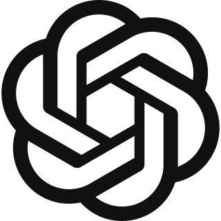

01
Map the bottleneck
We identify the work slowing your team down and where capacity is being lost.
We design, build and manage your digital workforce: AI agents that take over real business work, operated through your private Agentia Workspace.
We manage it. You see the work getting done.

Built around the leading AI and cloud ecosystems your team already knows.
 Anthropic
Anthropic

OpenAI Google
Google
 Meta
Meta
Most AI projects start with a tool. We start with the bottleneck. Before building any agent, we map the process, define the outcome, and decide where AI should act.
We identify the work slowing your team down and where capacity is being lost.
We define what the agent should own, when to escalate, and what success means.
Every agent is tied to work completed, hours released, or response time improved.
Not another tool for your team to configure. A private workspace where you see your active agents, completed work, hours released and support in one place.
See which agents are running across your business and what each one owns.
Track requests answered, documents processed, follow-ups completed and more.
Measure value in real operational outcomes, not tokens or technical activity.
We monitor, improve and support your agents so your team does not have to.
A simple operating model for turning one bottleneck into a managed digital workforce.
We map your process, exceptions, systems and ROI before writing a line of code.
We connect agents to your tools, data and workflows so they can execute real jobs.
We monitor, improve and report what your agents get done every month.
Your workspace shows the numbers that matter: work completed, hours released, response times improved and bottlenecks removed.
Agentia Labs is built for growing businesses with real operational pressure, no internal AI team, and a founder who wants AI in production - not another strategy deck.
We'll map it, design the workflow and show what your first AI agent could take over.
Book a Workforce Design Sprint